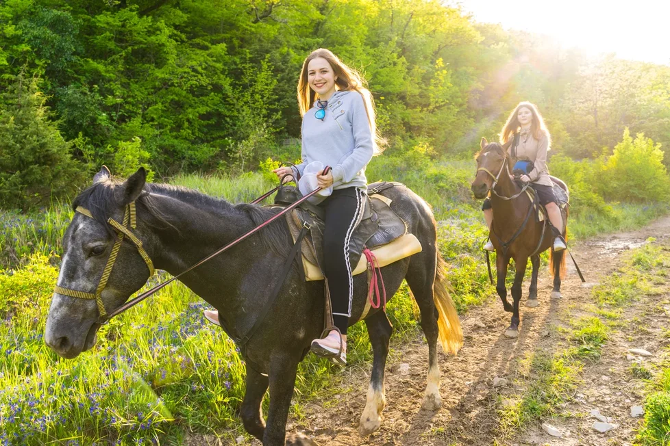
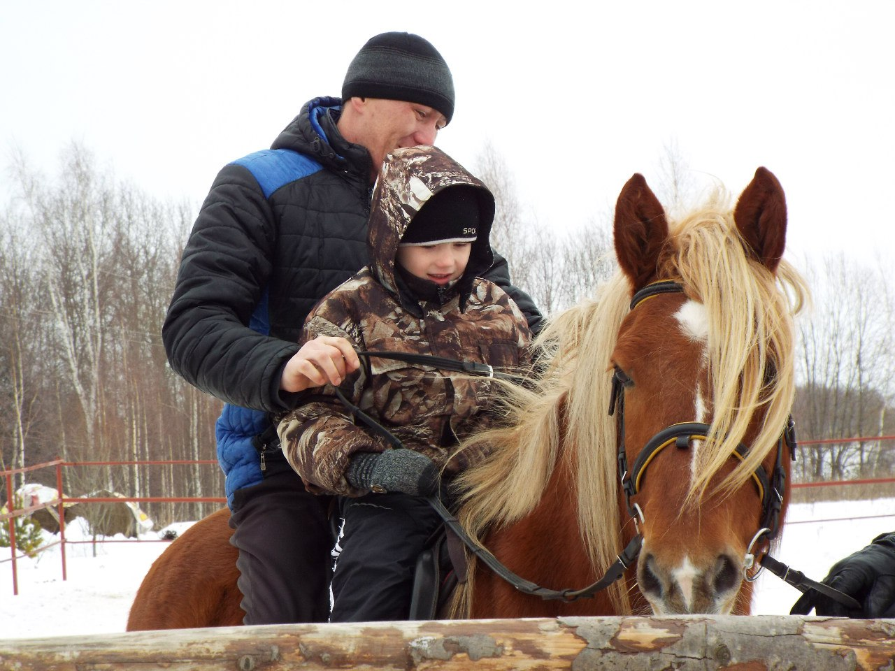
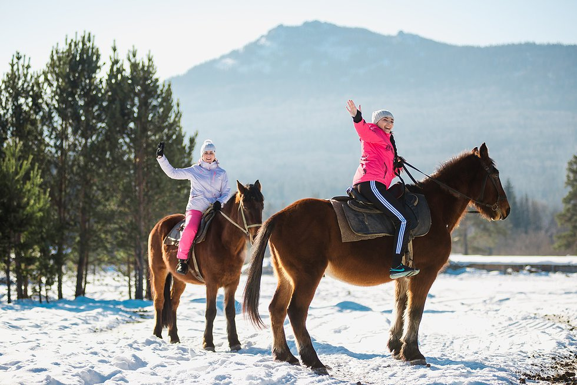
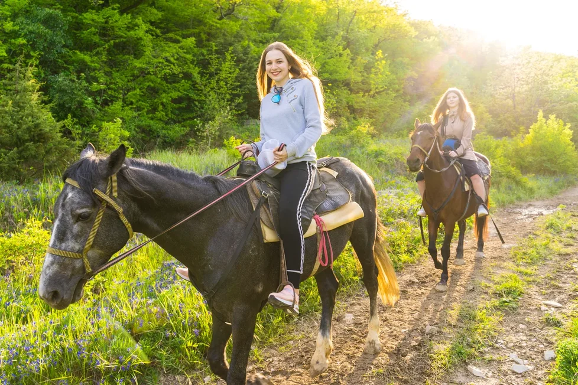
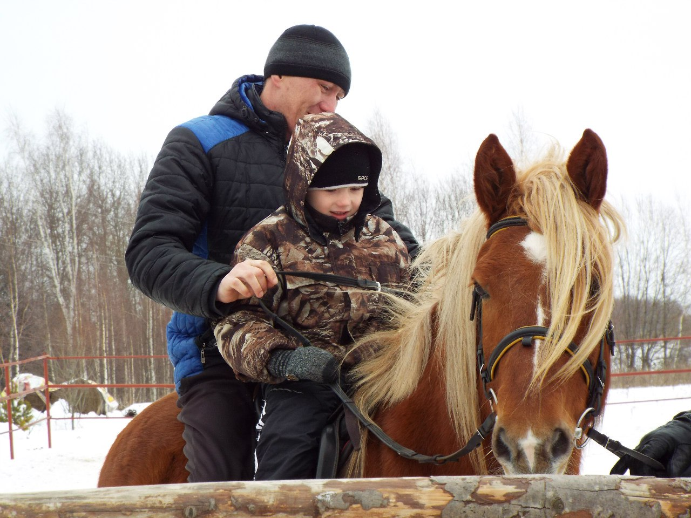
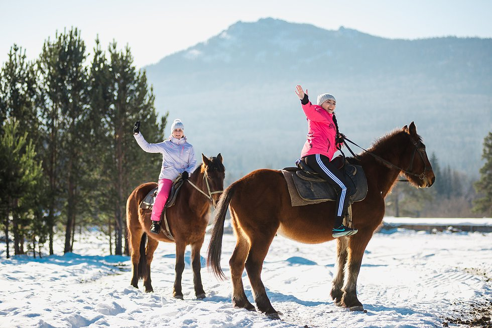

Конные прогулки по национальному парку "Марий Чодра" в Республике Марий Эл
Прогулка подарит Вам море эмоций и восторга и оставит новые незабываемые впечатления.
Почему выбирают именно нас?
-

Увлекательные экскурсии
У нас имеются маршруты разной сложности, как для новичков, так и для всадников, которые уверенно держатся в седле.
-
Опытные инструктора
Инструкторы очень подробно объяснят всадникам, как вести себя с лошадью, как управлять ею, научат ездить на разных аллюрах.
-

Живописные пейзажи
Маршруты проходят по лесной зоне: вы познакомитесь с природой парка, посетите различные исторические и природные объекты.
Наши маршруты
Шаговая прогулка "По марийскому лесу"
1000 рублей
-

Время в пути: 40-45 минут
-

Расстояние: 5 км
-

Сложность: легкая
Прогулка проходит по национальному парку "Марий Чодра" по лесной зоне. Этот маршрут идеально подходит для новичков, чтобы познакомиться с лошадью, получить первичные навыки верховой езды и насладиться природой.Цена указана за 1 человека.
Шаговая конная прогулка по лесу "К Царским воротам", 7 км
1500 рублей
-
Время в пути: 1 час 30 минут
-
Расстояние: 7 км
-
Сложность: легкаяя
Ключевая точка маршрута - 4 величественные ели, названные местными жителями Царские ворота. Существует поверьте, что если пройти через Царские ворота и загадать желание, то оно обязательно сбудется. Цена указана за 1 человека.

Конная прогулка для опытных всадников, 10 км
1500 рублей
-
Время в пути: время прохождения зависит от опыта всадника
-
Расстояние: 10 км
-
Сложность: средняя
Прогулка проходит по лесу. Прохождение маршрута шагом, рысью и галопом, зависит от ваших навыков верховой езды. Цена указана за 1 человека.
Конная прогулка для опытных всадников, 15 км
2000 рублей
-
Время в пути: время прохождения зависит от опыта всадника
-
Расстояние: 15 км
-
Сложность: сложная
Прогулка проходит по лесу. Прохождение маршрута шагом, рысью и галопом, зависит от ваших навыков верховой езды. Цена указана за 1 человека.
Шаговая конная прогулка по экологической тропе "След человека" 15 км
3000 рублей
-
Время в пути: около 2,5 часов
-
Расстояние: 15 км
-
Сложность: средняя
Ключевые точки маршрута - Царские ворота, каменный карьер, устье реки Юшут, река Илеть. Цена указана за 1 человека.
Галерея
 






Отзывы
«Лучший досуг за последнее время!»
«Съездили покататься на лошадях вместе с молодым человеком на самую длительную прогулку. Сначала сомневались, что для первого раза наверное лучше взять самую короткую дистанцию. Но в итоге все прошло замечательно. Это лучшее времяпрепровождение за последнее время. Очень понравились инструкторы, они очень доносчиво доносили до нас информацию и обучали верховой езде. С ними нам было очень комфротно и вовсе не страшно. Хочу отметить красоту осеннего леса, мы попали в разгар золотой осени и это было незабываемо! Молодому человеку тоже все очень понравилось, хотя он не любитель активного отдыха. Всем искренне советуем съездить в Марий Чодра на конные прогулки!
Читать отзыв полностью